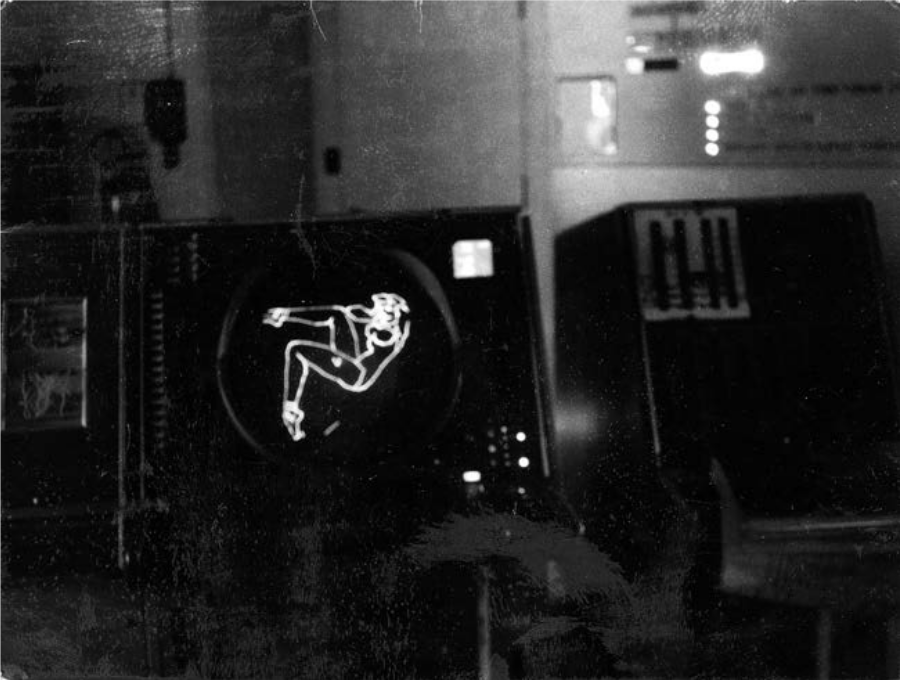

Screenshot je digitalni posnetek izhodne slike računalnika. Kot sem že omenil so prve posnetke zaslona začeli izdelovati v šestdesetih letih prejšnjega stoletja z namenom približevanja računalnika ljudem. Sprva so zaslonske posnetke izdelovali s fotoaparatom oziroma s sistemom leč, ki so izhodno sliko na monitorju projicirale na filmsko platno, ki so jih uporabljali tudi v fotoaparatih.
Prvi programi, ki so bili zasnovani za zajem vsebine zaslona so se sicer pojavili dokaj pozno in so bili uporabni samo na text-only monitorjih, saj so vsebino zaslona shranili v tekstovno datoteko. Kar je pomenilo, da so te programi zajeli vsebino zaslona ne pa tudi njegovega izgleda.
Slika1: Pin-up program running on an SD Console

Vir: Lawrence A. Tipton, Pin-up program running on an SD Console, 1959
Dandanes so programi za zajem slike zaslona večinoma že del operacijskega sistema. Sam postopek zajetja zaslona se od operacijskega sistema do operacijskega sistema zgolj malo razlikuje.
Zaslonski video posnetek je digitalni videoposnetek izhodne slike računalnika, običajno vendar ne nujno pa zaslonski videoposnetek zajema tudi posnetek izhodnega in vhodnega zvoka računalnika v trenutku snemanja. Tujka za zaslonski video posnetek je izraz screencast, ki jo je pri uporabil Jon Udell leta 2004 v enem od svojih člankov.
Za razliko od zaslonskega posnetka, ki ga lahko zajamemo brez posebnih orodij, potrebujemo za zajem zaslonskega videoposnetka dodatno programsko opremo. Nekaj programov, ki služijo snemanju zaslona bom prikazal v nadaljevanju. Vendar pa včasih samo snemanje zaslona ne deluje tudi z uporabo programov za zajem zaslona. Razlog za to ne leži v programski kodi pač pa v delovanju računalnika na katerem program ne more zajeti slike. Vzrok za to je pojav, ki mu v angleščini rečemo hardware overlay. Do tega pride, če izhodna slika računalnika izhaja iz grafične kartice. Preprosto povedano program ne more zajeti izhodne slike računalnika, če slika izhaja iz grafične kartice skozi monitor. Vendar pa to ni pogosto pri pisarniških računalnikih, pač pa bolj pri računalnikih namenjenih za igranje računalniških iger.